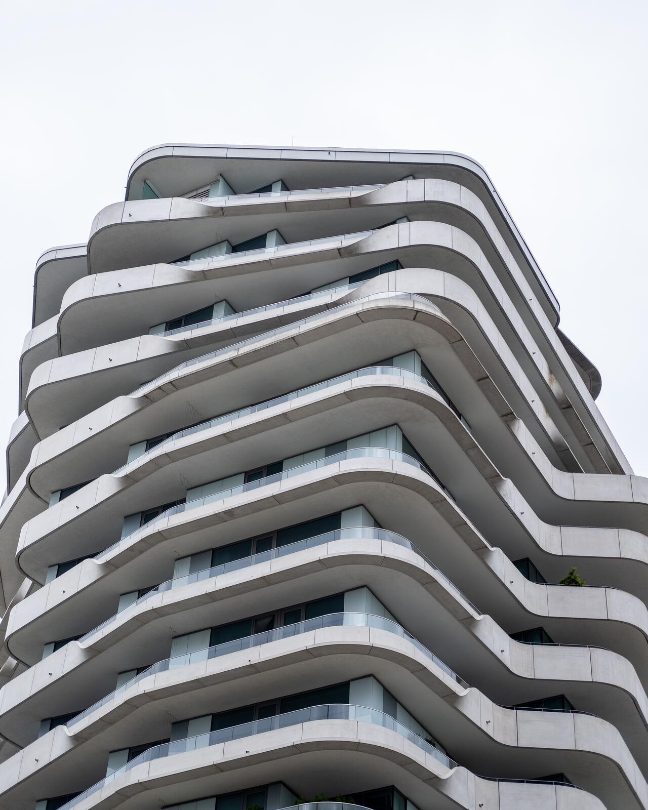
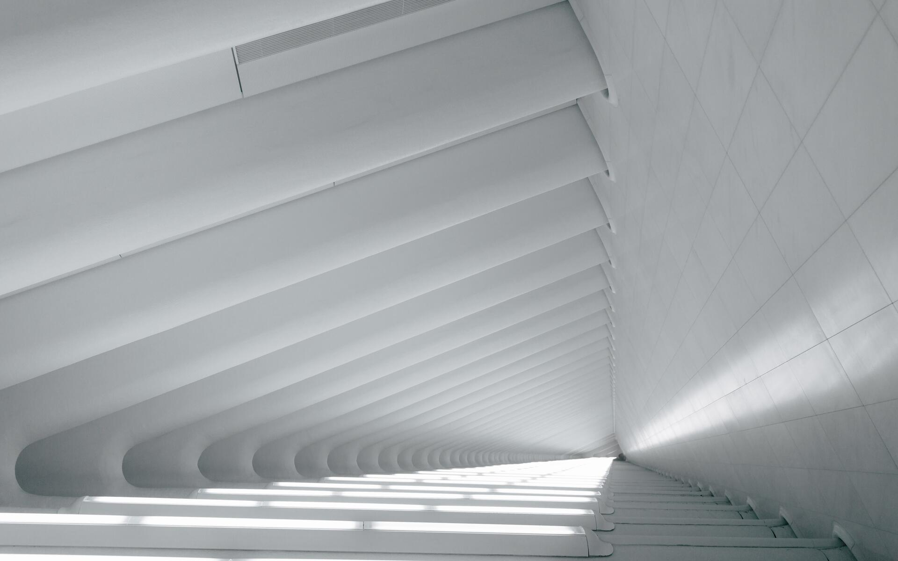
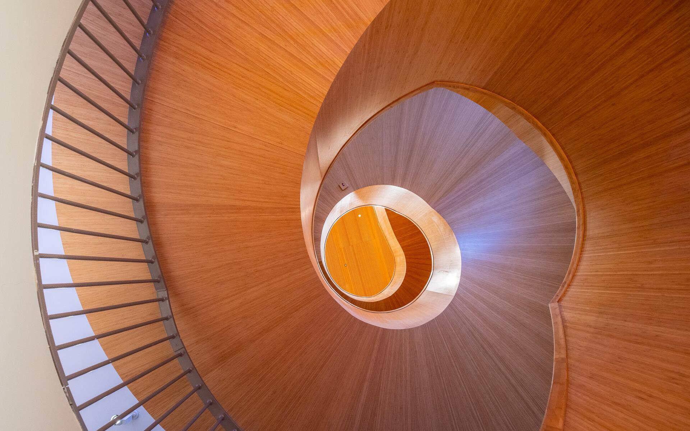
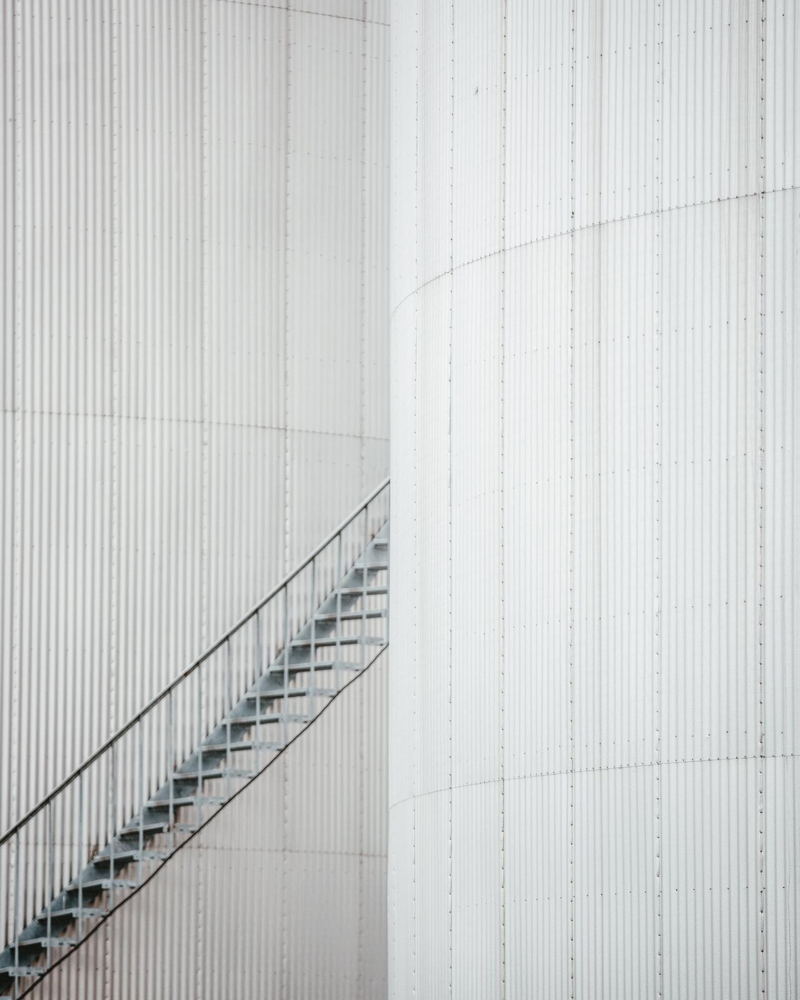
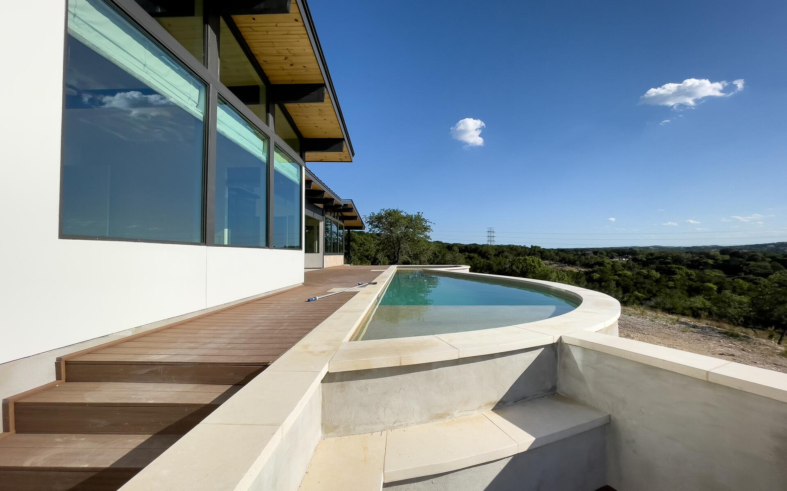
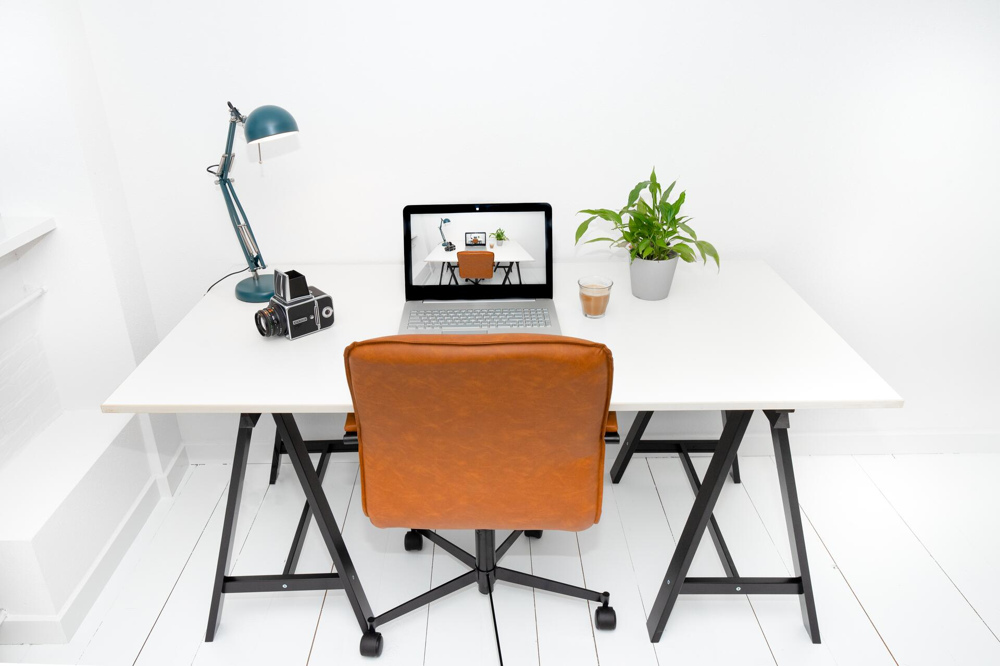
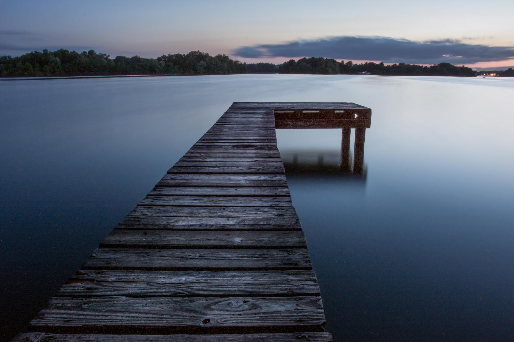

Harbour photo picks
I went through 1,931 more photos from NegativeSpace and Skitterphoto, both CC0. Six of them beat what we had. Below are the recommended ten, the home page with them in place, and each slot compared side by side. The pick in each slot is outlined in green.
The recommended ten










Home page with the new set (direction A)
We take on a few projects a year, and see each one through from the first sketch to the last fitting.
The new mosaic is crisper and warmer than the old one (white vaults, white grid, grey spiral). The wooden stair brings in the one warm tone, which sits well with Harbour's sand and green.
Opening photo: three options under the real veil
Terraces (kept) · pick
Architecture is the subject, and the tiny figure gives scale. It survives the veil because it has strong lines.

Sky on still water (new)
It says "harbour" literally and is very calm. But it says nothing about design, and a lake hero suits a hotel better than a studio.
White angles (new)
Beautiful on its own, but nearly disappears under the veil (white on white). Better in the mosaic, where it has no veil.
If you go with direction B (dark opening), the new lake pier at dusk replaces the river view. It reads calm and premium under the dark veil, where the river looked like a holiday cottage.

B: lake pier (new) · pick for B

B: river (now)
Slot by slot
Work mosaic, tall
The new tower is modern, crisp and reads as a building a studio designed. The vaults are a church interior.

Work mosaic, wide 1
More depth and light, same calm white. The grid moves to the Work page.
Work mosaic, wide 2
The warm wood adds the one colour the page was missing. The grey spiral was the weakest of the old ten.

Work page, tall
Quieter and more minimal than the stacked cubes, which compete with the balconies.

Work page, wide
A finished home with a view looks like a real project. The lake house is lovely but reads as travel.

About, the studio
A whole workplace instead of a styled shelf, so "your studio" is easier to picture.

Journal cover
Keeping the curtain shadows: quieter and more Harbour. The bedroom is the alternative if you want warmer.

Licences and checks
- All CC0. NegativeSpace and Skitterphoto put every photo under CC0, which allows selling inside a template with no credit needed. The source of each file stays in our own credits list as proof; nothing shows on the buyer's site.
- Full size: every new photo is 2,800–6,000 px in the original. The template gets them at most 1,920 px and compressed.
- One small risk: the wooden spiral is inside Forum Groningen (2019). Dutch law allows photos of buildings in public places, but it's less clear for interiors. The risk is low, since it's a stair, not an artwork. The grey spiral stays as a fallback if you'd rather be strict.
- No people, no logos in the picks. The tiny figure on the terraces faces away.